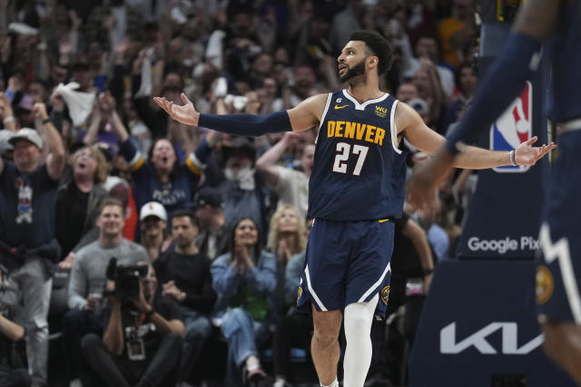

After leading the Denver Nuggets to a series-clinching shellacking of the Phoenix Suns, Jokic planned to unwind this weekend by watching his beloved horses race in Europe and getting in some much-needed daddy-daughter time in the pool with 20-month-old Ognjena.
Kentavious Caldwell-Pope scored 12 of his 17 points in the second half against his former team for the top-seeded Nuggets, who have never been this close to the NBA Finals in 47 years in the league. Denver is making its fifth straight playoff appearance, and the ultimate stage is now just one win away.
Denver blew a 14-point lead in Game 3, but made a decisive 13-0 run in the fourth quarter to snap the Lakers nine-game home winning streak since March 26, including seven straight victories since the regular season ended. The Nuggets excelled down the stretch with Murray and Jokic repeatedly running a two-man pick-and-roll game suggested by “Coach Jokic,” according to coach Michael Malone.
“I cant speak for the guys right now because I dont know whats going through all their minds, but I still (believe),” said LeBron James, who had 23 points, 12 assists and seven rebounds. “So its time to go right back home and start to refuel and start the treatment process and recovery process and get ready for Monday. My mindset is always locked in.”
Anthony Davis had 28 points and 18 rebounds for the seventh-seeded Lakers, who hadnt lost three straight games since early February. Los Angeles prolonged, desperate surge ever since the trade deadline has finally run out of steam against the powerhouse Nuggets, who have won five consecutive playoff games.
“Our backs have been against the wall (for) probably about the last two months, maybe more than that since the trade deadline,” Reaves said. “Swinging, throwing punches to fight to get to this opportunity. ... We can either come out Monday and go home, or we can fight for another day. And with the group of guys that we’ve got, I know what that answer will be.”
Jokics streak of four consecutive triple-doubles ended in a fairly quiet game for the two-time MVP, who got his fourth foul in the third quarter. But Murray scored 17 points in a dynamic first quarter following his 23-point fourth quarter two nights ago, and he had 30 points by halftime of Game 3.
The Lakers passionate fans turned out in force for the 17-time champion franchises first conference finals games at home since 2010. Los Angeles tried desperately to get back in the series, with James playing 43 minutes after spraining his left ankle in Game 2 on top of his already sore right foot.
But the Nuggets’ flight to the coast didn’t cool off Murray in the slightest: The Canadian guard poured in 17 points in the first quarter and had 26 midway through the second. Reaves racked up 15 points, three assists and three rebounds in the second quarter alone to keep LA in it.
Hachimura’s 3-pointer early in the fourth gave the Lakers their first lead since the opening minutes, but the Nuggets took charge again in a rally highlighted by Brown’s 3-pointer with 7:02 to play, after which he taunted the Lakers’ bench with Los Angeles own “Freeze” 3-point celebration.
D’Angelo Russell had another rough game for the Lakers, scoring three points on 1-of-8 shooting in 20 minutes. The Lakers’ biggest addition in their trade deadline transformation has just 21 points in the series.
Lakers: Backup C Mo Bamba missed his ninth consecutive game with a sore left ankle. The team is hopeful Bamba can play at some point in this series. ... Fans near courtside included Jack Nicholson, Eddie Murphy, Denzel Washington, Jake Gyllenhaal, Andy Garcia, Dyan Cannon, Ken Jeong, Joel McHale, LA Kings captain Anze Kopitar and defenseman Drew Doughty, and Khalil Mack, Derwin James and Sebastian Joseph-Day from the Los Angeles Chargers’ defense.
With Jokic’s methodical play and folksy personality leading the way, the Nuggets have overpowered Anthony Edwards, Karl-Anthony Towns, Kevin Durant and Devin Booker en route to the Western Conference finals against LeBron James and the Los Angeles Lakers.
The 6-foot-11, 285-pound Jokic does things at his tempo — using some of the 24-second clock to lumber down the court, more to post up, leaning this way, then that, backing in, spinning or pivoting and the rest to score or deliver a did-he-really-just-do-that? pass.
“Not only finding his voice but being comfortable with his voice,” Nuggets coach Michael Malone said. “All season long there have been so many different examples … whether it’s in a timeout huddle, in the locker room, at practice, before a game in Houston when he gathered the troops together because we knew he didn’t like the way they were warming up.
Despite his stellar season, Jokic came up short in the voting to become fourth ever back-to-back-to-back MVP and joining Bill Russell, Wilt Chamberlain and Larry Bird.
But he does have game — and in the NBA, game recognizes game no matter what it looks like. Jokic has reached 300 points, 100 rebounds and 100 assists in a postseason for the third time in his career. No other Nuggets player has accomplished the feat, according to ESPN Stats & Info.
Jokic doesn’t have an Adonis body like so many NBA players. He doesn’t jump out of the gym or put on a show like several of his fellow All-Stars. He just consistently makes jaw-dropping passes and sweet shots from anywhere on the court, sometimes firing passes with laser-like precision from one end to the other.
Asked about that, Durant, the 2014 MVP, said: “I wouldn’t say a point, well, yeah, I guess. … There’s no limit or ceiling that you can put on him. You can’t just call him a great passer or a great big man.
With Jokic’s methodical play and folksy personality leading the way, the Nuggets have overpowered Anthony Edwards, Karl-Anthony Towns, Kevin Durant and Devin Booker en route to the Western Conference finals against LeBron James and the Los Angeles Lakers.